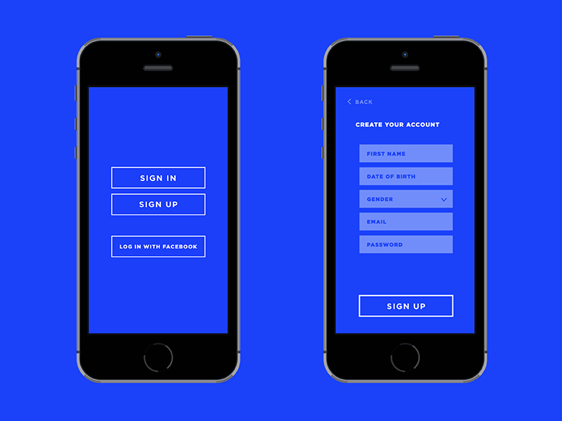
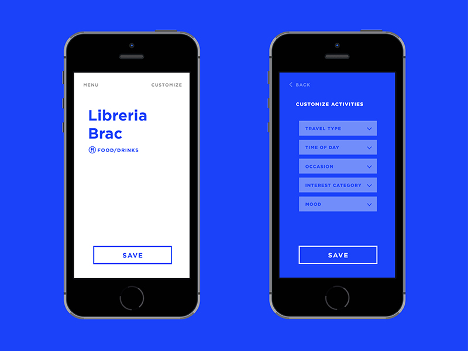
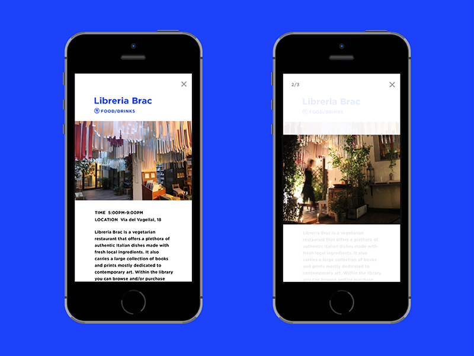
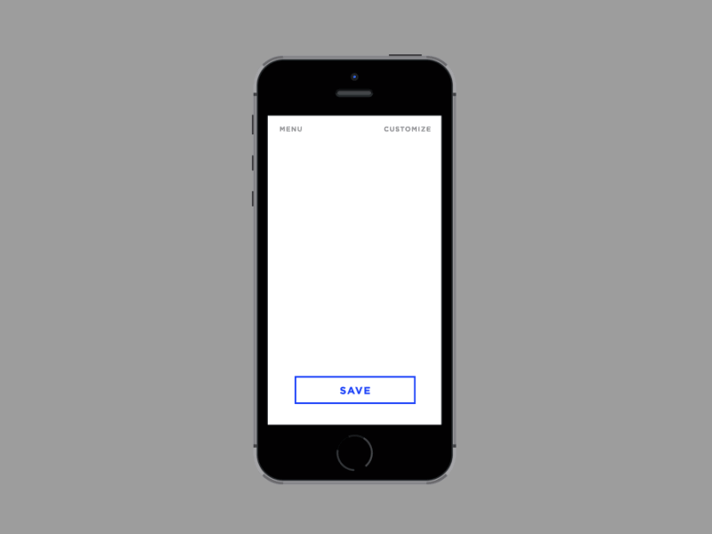

Anna Bang
WanderOff Mobile App
Design of a mobile app that encourages spontaneous traveling.
"Don't be a tourist. Wander off!"
WanderOff is a mobile app that generates lists of local activities, one at a time, allowing users to avoid the obvious tourist attractions. Users can bookmark activities they like and also add them to a calendar.





annabangdesign.com